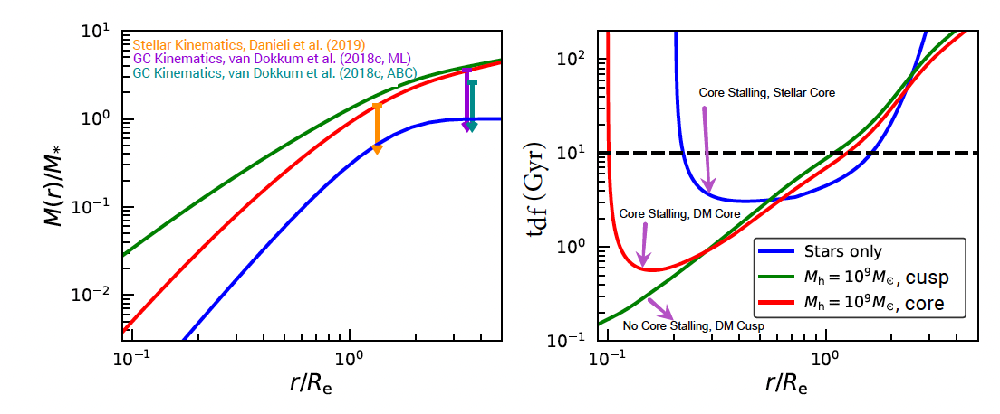

I am a Ph.D. student in Astronomy at Yale University. I am interested in the physics of dark matter,
whose particle nature remains unknown. I am also interested in galaxies and star clusters, how they form and evolve,
and how their structure and dynamics (and those of other astrophysical objects such as black holes and tidal streams)
can be used to learn about dark matter.
At Yale, I am co-advised by Frank van den Bosch and Pieter van Dokkum. Before coming to the United States,
I obtained my bachelor's and master's degrees in Physics from the University of Calcutta and Presidency University
(erstwhile Presidency College), respectively. They are both located in Kolkata, a metro city in eastern India, where I was also born and brought up.
At the White Mountains, New Hampshire in 2019
Research
Click on the links below to know more about my research (Under Construction)
The recently discovered galaxy NGC 1052-DF2 (DF2 hereafter) has received much attention because of its low dark matter content
(van Dokkum et al. 2018a, Danieli et al. 2019) and a rich population of unusually bright globular clusters (GCs, van Dokkum et al. 2018b).
While the velocity dispersions of both the stars and the GC population are consistent with the absence of dark matter, they also allow
for a low mass (up to about five times the total stellar mass) dark matter halo. My work on this galaxy addresses the
following interesting questions: Is the dynamics of the GCs consistent with a stars-only mass model? What happens when a dark
matter halo added? Are GC-GC mergers relevant?
I. Is the dynamics of the GCs consistent with a stars-only mass model?
Being massive, the GCs in DF2 are susceptible to orbital decay by losing energy via dynamical friction. Thus, if a mass model
for DF2 predicts very short inspiral timescales from current GC locations to the galaxy center, it is unlikely for the GCs to
be observed at those locations, and the said model can be ruled out. In Dutta Chowdhury et al. (2019), I have used N-body
simulations to investigate the impact of dynamical friction on the GCs in a stars-only mass model. I have demonstrated that
while the GC system does lose energy and become more compact over a timescale comparable to its age (~10 Gyr), the evolution is
slow (inspiral timescale for the most massive GC is at least ~4 Gyr). Moreover, dynamical friction ceases to operate within the
galaxy's core, a phenomenon known as core-stalling (.e.g, Read et al. 2006), and, therefore, even the most massive GC can only
sink as far as the core radius and no further. In addition to core-stalling, mutual scattering among the GCs also keeps them
dynamically buoyant, preventing them from sinking to the galaxy center. Therefore, a stars-only mass model is perfectly viable
as long as the GC system formed in a somewhat more extended state and slowly evolved to its current configuration.
Stars Only Mass Model: Movie showing the evolution of the stars (red) and the GCs (blue) in DF2 over 10 Gyr from one of my 50 multi-GC N-body
simulations of the system. All 50 simulations match observational constraints on both the stellar component of
DF2 and its GC population but differ in the initial line-of-sight positions and the tangential velocities of the GCs
Stars Only Mass Model: Evolution of the 3D radii (left panels) and the orbital angular momenta (right panels)
of the 10 GCs in the same simulation as above. In addition to the cessation of dynamical friction in the stellar core (core stalling),
GC–GC scattering keeps the GCs afloat, preventing them from sinking to the center of the galaxy.
II. What happens when a dark matter halo is added?
Also, in Dutta Chowdhury et al. (2019), using an approximate, semi-analytical dynamical friction prescription (Petts et al. 2015),
I have estimated the orbital decay timescale for a typical DF2 GC in the presence of a low mass, cuspy halo, which is allowed by
the kinematic constraints (van Dokkum et al. 2018a, Danieli et al. 2019), and found it to be significantly shorter in the central
region of the galaxy compared to a stars-only model. Such short inspiral timescales suggest that GCs in this region would rapidly
sink to the galaxy center, forming a nuclear star cluster, which is not supported by observations. Therefore, although allowed by
kinematic constraints, it is improbable for DF2 to have a low mass, cuspy halo. However, it could still have a low mass, cored halo,
which would also prevent the GCs from sinking to the galaxy center, similar to a baryonic core.

GC Orbital Decay in Absence and Presence of Dark Matter: Different mass models (left panels) allowed within
the observational constraints and dynamical friction-induced orbital decay timescales (right panels) for a typical
DF2 GC on a circular orbit in these models. Dynamical stabilty arguments favor a stars-only model or low mass, dark
matter core over a low mass, dark matter cusp.
III. Are GC-GC mergers relevant?
In Dutta Chowdhury et al. (2019), I modeled the GCs in DF2 as hard spheres and, therefore, could not investigate
the possibility of GC-GC mergers. However, as the expected internal velocity dispersions (based on measured masses and sizes)
of the GCs are comparable to the velocity dispersion of the GC system, such a situation may be conducive to GC-GC mergers.
If true, this could explain the anomalous luminosity function of the GCs. Therefore, in Dutta Chowdhury et al. (2020),
I have re-simulated some of my previous hard-sphere simulations with live-GCs. Using the live-GC simulations and analytical modeling,
I have demonstrated that given their number density and sizes, the GC-GC merger rate in DF2 is too low to be of any significant
consequence. Therefore, unless the total number of initial GCs was much higher than that at present, the unusually high masses of
the GCs are most likely not an outcome of past GC-GC mergers.
Publications
Dutta Chowdhury, D. , van den Bosch, F.C., Robles, V.H., van Dokkum, P. et al.
"On the Random Motion of Nuclear Objects in a Fuzzy Dark Matter Halo" 2021, ApJ, 916, 27
[ADS]
Shen, Z., Danieli, D., van Dokkum, P. et al. including Dutta Chowdhury, D.
"A Tip of the Red Giant Branch Distance of 22.1 +/- 1.2 Mpc to the Dark Matter
Deficient Galaxy NGC 1052–DF2 from 40 Orbits of Hubble Space Telescope Imaging'' 2021, ApJL, 914, L12
[ADS]
Dutta Chowdhury, D. , van den Bosch, F.C., and van Dokkum, P. "On the Evolution of the
Globular Cluster System in NGC 1052-DF2: Dynamical Friction, Globular-Globular Interactions, and Galactic Tides" 2020, ApJ, 903, 149
[ADS]
Dutta Chowdhury, D., van den Bosch, F.C., and van Dokkum, P. "On the Orbital Decay of Globular
Clusters in NGC 1052-DF2: Testing a Baryon Only Mass Model" 2019, ApJ, 877, 133
[ADS]
Ansar, S., Datta, K.K. and Dutta Chowdhury, D. "Impact of Inhomogeneous CMB Heating of Gas on the
HI 21-cm Signal During Dark Ages" 2018, PhysRevD, 98, 103505
[ADS]
Dutta Chowdhury, D. and Chatterjee, S. "Sunyaev-Zel’dovich Signal from Quasar Hosts: Implications
for Detection of Quasar Feedback" 2017, ApJ, 839, 34
[ADS]